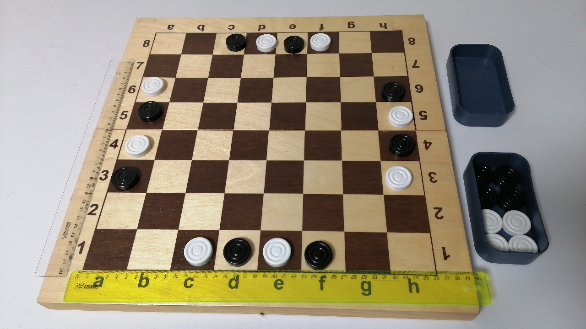
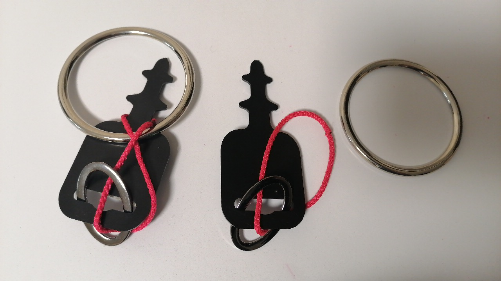
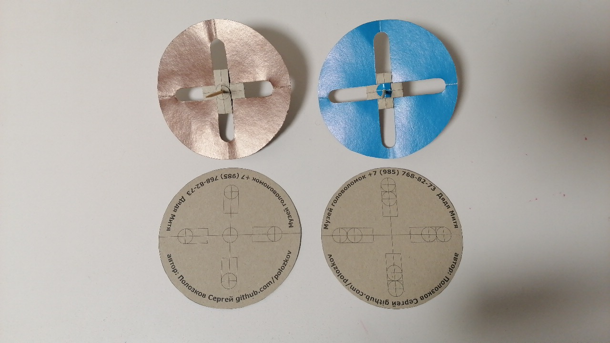
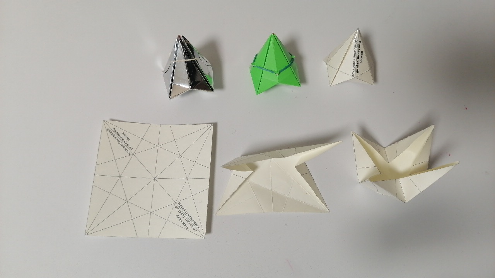
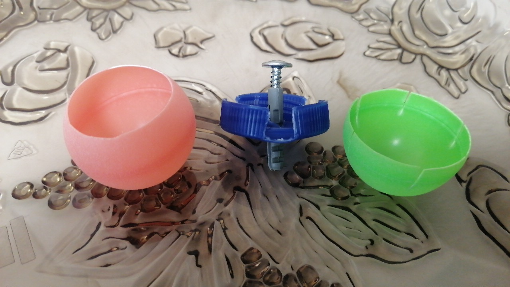
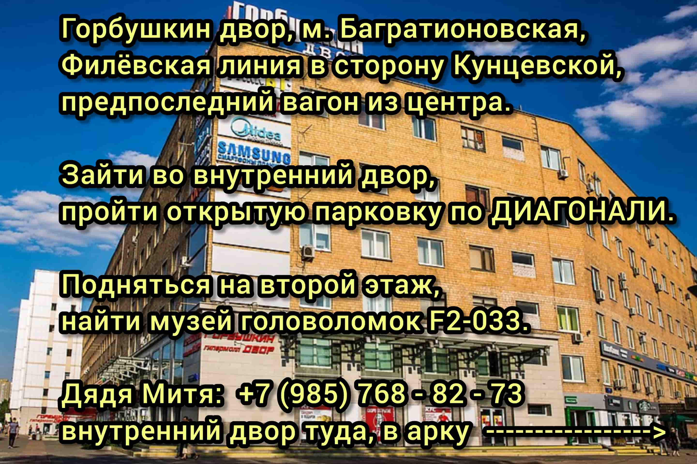

Дата и место проведения: 11 сентября 2021, суббота; Москва, Мосфильмовская улица 88, корпус 5, Новая школа, метро Раменки, Солнцевская (жёлтая) линия.
Журнал Квантик: kvantik.com
Новая Школа на Мосфильмовской: home.n.school
Я (Полозков Сергей Сергеевич) провожу мастер-класс. Я сотрудничаю с музеем головоломок. Вот моя программа на фестивале:
Подробнее о загадках, игре, европодвесе и волчках вы можете узнать у моего коллеги - руководителя музея головоломок Певницкого Дмитрия Львовича. Перед посещением музея обязательно позвоните (или напишите в WhatsApp) и согласуйте время.
+7 (985) 768-82-73 музей-студия Головоломок, руководитель - Певницкий Дмитрий Львович (дядя Митя). Сайт музея головоломок: http://www.puzzlemuseum.ru
Страница Полозкова Сергея Сергеевича на ГитХабе (для связи с автором):
https://github.com/polozkov
Репозиторий этой веб-страницы:
https://github.com/polozkov/kvantikfest2021
Подсказки можно посмотреть в репозитории моего проекта на ГитХабе kvantikfest2021
У обоих по 8 шашек. В начальной позиции по серединам сторон (4 клетки) стоят шашки поочередно: белая, чёрная, белая, чёрная (как на диаграмме). Начинают белые. Цель - поставить любые ЧЕТЫРЕ (или более) свои шашки в РЯД (друг за другом) как в КРЕСТИКАХ-НОЛИКАХ (по горизонтали, вертикали или диагонали).
Шашки ходят как мирные шахматные ЛАДЬИ, (по вертикали или горизонтали на любое число полей), но ВЗЯТИЯ ЗАПРЕЩЕНЫ. Поэтому ладьи - "мирные". В гипотетической позиции, где у игрока нет ни одного хода, запертому засчитывается поражение. В практической игре, где оба стремятся победить такая ситуация не случится.
Правила (фото и видео) можно посмотреть и скачать в репозитории моего проекта на ГитХабе kvantikfest2021
Рожковые гаечные ключи в крупных магазинах (например, в Ашане) иногда продаются примотанными к пластиковой упаковке с прорезью, которая надевается на специальную стойку. Такая прорезь называется европодвесом. Для головоломки необходима форма, изображенная на рисунке.
У этой задумки интересная история. Дядя Митя (основатель музея головоломок) спросил у меня, что можно изготовить из такой пластиковой штуки. Я взял домой кольца, верёвки; через несколько дней появилась верёвочная конструкция. Митя усложнил головоломку, добавив переброс на другую сторону. По совету мастера решение я не показываю. Подсказок и так достаточно.
Фото «Европодвеса» можно посмотреть в репозитории моего проекта на ГитХабе kvantikfest2021
Его можно изготовить из плотной бумаги (в частности, для черчения) или из цветного картона. Если просто проткнуть зубочисткой центр круга, то он будет прокручиваться. Чтобы увеличить площадь соприкосновения, сделайте лепестки с четырёх сторон канцелярскими ножницами.
На фестиваль Квантика в Новой школе я принёс 2 вида волчков на зубочистке: с 5 и 9 точками прокола (на лепестке может быть не 1 прокол, а 2; так как лепестков четыре, то с центральной точкой крепления оси в простой версии получается 5, а в сложной — 9 проколов).
При изготовлении можете напечатать заготовку на принтере или начертить с помощью циркуля и линейки. После того, как вы вырезали круг, сделайте маленькие проколы постельной булавкой, потом согните заготовку пополам по двум осям и прорежьте ножницами язычки. В конце расширьте маленькие отверстия, сделанные булавкой, с помощью зубочистки.
Фото волчка на зубочистке можно посмотреть в репозитории моего проекта на ГитХабе kvantikfest2021
Для изготовления подойдёт плотная бумага или цветной картон. Картон может быть бархатным, глянцевым, флюоресцентным, главное, чтобы он гнулся. Моя конструкция крепится на резинках, но можно склеить вершину скотчем. Я опубликовал статью про бумажный волчок в журнале Квант_2020_03 на развороте лицевой обложки (перед содержанием).
Размер я подбирал такой, чтобы на листе А4 поместилось 6 волчков. Размер может быть и больше, например, в журнале приведена схема для стороны 14 сантиметров. Важно, если используете толстый картон, то продавите сгибы шариковой ручкой, чтобы края были более чёткими. В версии без скотча резинка может быть банковской, для волос или для плетения. Резинка через несколько месяцев может засохнуть, так что просто поменяйте её. Скотч тоже можно заменить при расклеивании.
Фото волчка-пирамидки можно посмотреть в репозитории моего проекта на ГитХабе kvantikfest2021
Для изготовления понадобятся 2 мячика для пинг-понга разных цветов (классическая гамма: белый и жёлтый), саморез, дюбель, крышка из-под пятилитровой бутылки для воды и инструменты (ножницы, булавка и крестовая отвёртка). На крышке резьба должна состоять из 12 секторов: 3 двойные кромки, 1 одинарная; затем 3,1; и опять 3,1. Вырежьте ножницами все одинарные кромки.
По центру крышки сделайте отверстие с помощью булавки и расширьте его ножницами. Дюбель должен торчать с гладкой стороны крышки; саморез вкручиваться с внутренней стороны крышки. Если теннисные мячи отличаются по диаметру, сделайте меньший мяч внутренним.
На внутреннем мяче вырежьте круг такого размера, чтобы внутрь смогла пролезть крышка с вставленным дюбелем. От внешнего шара отрежьте круг чуть меньше половины, а на оставшуюся поверхность надрежьте в шести местах чуть ниже «экватора», чтобы из двух кусков могла собраться сфера. Центр тяжести будет с той стороны, где головка самореза.
Фото и видео волчка Томсона можно посмотреть в репозитории моего проекта на ГитХабе kvantikfest2021
Приходите к нам в музей головоломок. Сайт: http://www.puzzlemuseum.ru У нас много собственных разработок и очень интересно. Есть группа ВКонтакте Музей-студия ГОЛОВОЛОМОК
Перед посещением обязательно позвоните руководителю (или напишите в WhatsApp) и согласуйте время: +7 (985) 768-82-73 музей-студия Головоломок (Дмитрий Львович). 